Quantum Narrative Matrix Theory: Official Statement of Originality and Intellectual Property Protection
Document Version: 1.0
Date: December 2025
Author: Nanjie Ma
Copyright: © 2025 Nanjie Ma. All Rights Reserved.
Executive Summary
This document provides the official statement of originality for the Quantum Narrative Matrix (QNM) theory, establishing the unique combination of theoretical elements, mathematical formulations, and implementation methods that constitute the intellectual property of this work. This document serves as:
1. Official Record: Definitive statement of theoretical originality
2. Legal Protection: Foundation for intellectual property claims
3. Detection Standard: Benchmark for identifying potential infringement
4. Evidence Base: Reference for establishing priority and similarity
Part I: Core Theoretical Framework - Official Statement
1.1 Three Fundamental Mechanisms (Unique Combination)
The Quantum Narrative Matrix theory is founded on a unique combination of three coupled mechanisms that together form the theoretical core. This specific combination and its mathematical formulation are original to this work.
Mechanism 1: Iterative Generation
Official Mathematical Formulation:
H_NM(t+Δt) = F(H_NM(t))
Official Description:
- Function: Engine of time and complexity
- Purpose: Simulates quantum expansion of spacetime volume through dynamic matrix growth
- Implementation: The iterative generation mechanism drives the temporal evolution of the quantum narrative matrix, creating new degrees of freedom while preserving existing structure
- Uniqueness: The specific functional form F(·) and its coupling with other mechanisms are original to this work
Legal Protection: The specific mathematical formulation, functional implementation, and coupling mechanism are protected as original expression.
Mechanism 2: Topological Constraint
Official Mathematical Formulation:
∂² = 0
Official Description:
- Function: Enforces causal integrity and symmetry protection
- Purpose: Ensures information conservation and maintains physical consistency through homological algebra constraints
- Implementation: The topological constraint mechanism guarantees that the quantum narrative matrix evolution preserves fundamental physical principles - Uniqueness: The specific application of ∂² = 0 constraint in the context of quantum narrative matrices and its integration with other mechanisms are original to this work
Legal Protection: The specific mathematical formulation, constraint implementation, and integration method are protected as original expression.
Mechanism 3: Ordered Structuring
Official Mathematical Formulation:
Local dC/dt > 0
Official Description:
- Function: Explains spontaneous emergence of complex structures
- Purpose: Drives local narrative coherence maximization and forms local ordered structures
- Implementation: The ordered structuring mechanism ensures that local coherence increases over time, leading to the emergence of macroscopic order from quantum fluctuations
- Validation: Statistically verified with Z = 6.81σ significance (Phase 3 Golden Regime)
- Uniqueness: The specific formulation of local coherence dynamics and its quantitative validation are original to this work
Legal Protection: The specific mathematical formulation, coherence measure definition, and validation methodology are protected as original expression.
1.2 Unique Combination of Three Mechanisms
Official Statement of Originality:
The combination of these three mechanisms in a coupled, integrated framework is a unique theoretical contribution. The specific ways in which these mechanisms interact, their relative weights, and their joint implementation constitute original intellectual property.
Key Uniqueness Factors:
1. Coupled Evolution: The three mechanisms operate simultaneously and interactively, not as independent processes
2. Specific Coupling Functions: The mathematical relationships between mechanisms are uniquely defined
3. Integrated Implementation: The specific algorithm for integrating all three mechanisms is original
4. Validated Results: The combination produces statistically significant emergent structure (Z = 6.81σ)
Legal Protection: The combination itself, the coupling methodology, and the integrated implementation are protected as original expression.
Part II: Omnidimensional Projection Mechanism
2.1 Official Mathematical Formulation
Projection Operator:
Ψ_physical = Φ(H_NM(t))
Projection Scale Calibration:
κ ≈ 0.960 + 2.610(1 - S_sym) + 5.288(1 - α_coh)
Central Charge Relationship:
c_eff = c_raw + (λ_SB²/ω_gap) + χ⟨n²⟩ + g⟨n⟩²
Spectral Index Derivation:
n_s = 1 - 2/c_eff
2.2 Official Description
Function: Observable reality emerges through the projection of high-dimensional quantum narrative matrices into low-dimensional observable spacetime.
Purpose: - Coarse-grain microscopic narrative matrices into observable spacetime - Bridge quantum information structure with cosmological observations - Derive cosmological parameters from quantum state statistics
Implementation: - The projection operator Φ(·) implements scale-dependent transfer functions - Nonlinear filtering mechanisms model dimensional reduction - The projection scale κ is calibrated using statistical optimization over random matrix ensembles - The calibration produces n_s = 0.9649, matching Planck 2018 observations
Uniqueness: - The specific projection operator formulation is original - The calibration method using random matrix theory is original - The derivation of cosmological parameters (n_s) from quantum entanglement scaling is original - The specific calibration formula is original
Legal Protection: The projection operator formulation, calibration methodology, and specific calibration formulas are protected as original expression.
Part III: Dimensional Reduction and Cosmological Alignment
3.1 Official Methodology
Band-Weighted Residual Compression:
RMSE_unified = w_global · RMSE_global + Σ_b w_b · RMSE_b
CAMB/Pantheon Automation: - Automated parameter search and fitting loop - Residual compression with multi-scale RMSE diagnostics - Alignment with ΛCDM baselines (Planck 2018, n_s = 0.9649) - Pantheon+ standard candle fits at 0.02 mag precision
Calibration Results: - Mid-band RMSE: 5.09×10⁻³ - Global RMSE: 7.72×10⁻³ - Pantheon distance modulus: 0.02 mag residual
3.2 Official Description
Function: Aligns synthetic CMB spectra and matter-distribution P(k) curves with standard cosmological baselines.
Purpose: - Validate theoretical predictions against observational data - Establish quantitative connection between quantum narrative statistics and cosmological observables - Provide empirical grounding for the theoretical framework
Implementation: - Band-weighted residual compression with specific weighting schemes - Automated CAMB/Pantheon pipelines for baseline comparison - Multi-scale RMSE diagnostics for comprehensive validation - Specific parameter optimization algorithms
Uniqueness: - The specific band-weighting scheme is original - The automated calibration loop methodology is original - The integration of CAMB/Pantheon pipelines is original - The specific residual compression algorithms are original
Legal Protection: The calibration methodology, residual compression algorithms, and automated pipeline implementation are protected as original expression.
Part IV: Complete Theoretical Framework Combination
4.1 Official Statement of Integrated Framework
The complete Quantum Narrative Matrix theory consists of:
1. Three Coupled Mechanisms (as described in Part I)
o Iterative Generation
o Topological Constraint
o Ordered Structuring
2. Omnidimensional Projection (as described in Part II)
o High-to-low dimensional projection operator
o Projection scale calibration
o Cosmological parameter derivation
3. Dimensional Reduction and Alignment (as described in Part III)
o Band-weighted residual compression
o Automated baseline comparison
o Quantitative validation methodology
4.2 Uniqueness of the Complete Framework
The combination of all three components in a unified framework is unique and original.
Key Uniqueness Factors:
1. Integrated Architecture: The three components are not independent but form an integrated theoretical system
2. Specific Implementation: The mathematical formulations, algorithms, and calibration methods are uniquely defined
3. Validated Results: The complete framework produces statistically significant and observationally validated results
4. Original Methodology: The specific methods for integration, calibration, and validation are original
Legal Protection: The complete framework, its integration methodology, and the specific implementation are protected as original expression.
Part V: Mathematical Formulations - Complete Inventory
5.1 Core Evolution Equations
Schrödinger Time Evolution:
iℏ ∂/∂t |ψ(t)⟩ = H_eff(t) |ψ(t)⟩
Density Matrix Evolution:
ρ(t+Δt) = U(t,Δt) ρ(t) U†(t,Δt)
U = exp(-i/ℏ H_eff Δt)
Lindblad Master Equation:
dρ/dt = -i/ℏ [H_eff, ρ] + Σ_k γ_k (L_k ρ L_k† - ½{L_k†L_k, ρ})
5.2 Symmetry Breaking and Nonlinear Interactions
Symmetry Breaking Hamiltonian:
H_SB = H_0 + λ_SB · V_SB
Symmetry Measure:
S = 1 / (1 + ||H - H_reflected|| / N)
Kerr Nonlinear Hamiltonian:
H_Kerr[i,i] = χ · n_i²
Mean Field Interaction:
H_MF = g · ⟨n⟩_i · ⟨n⟩_j
5.3 Entanglement Measures
Wootters Concurrence:
C(ρ) = max(0, √λ₁ - √λ₂ - √λ₃ - √λ₄)
von Neumann Entanglement Entropy:
S_E = -Tr(ρ_A log ρ_A)
5.4 Complete Formula Implementation Status
All 26 core formulas are fully implemented (100%) with: - Numerical accuracy < 1×10⁻¹⁰ - Unitarity error < 1×10⁻¹⁰ - Trace error < 1×10⁻¹⁰ - Large-scale simulation capability (1000×1000 matrices)
Legal Protection: All mathematical formulations, their specific implementations, and the numerical methods are protected as original expression.
Part VI: Theoretical Fingerprint System
6.1 Core Theoretical Fingerprints
Fingerprint 1: Three-Mechanism Combination - [ ] Iterative Generation: H_NM(t+Δt) = F(H_NM(t)) - [ ] Topological Constraint: ∂² = 0 - [ ] Ordered Structuring: Local dC/dt > 0 - [ ] Coupled implementation methodology
Fingerprint 2: Omnidimensional Projection - [ ] Projection formula: Ψ_physical = Φ(H_NM(t)) - [ ] Calibration formula: κ ≈ 0.960 + 2.610(1-S_sym) + 5.288(1-α_coh) - [ ] Central charge relationship - [ ] Spectral index derivation: n_s = 1 - 2/c_eff
Fingerprint 3: Dimensional Reduction - [ ] Band-weighted RMSE formula - [ ] CAMB/Pantheon automation - [ ] Specific calibration parameters - [ ] Validation methodology
Fingerprint 4: Complete Framework Integration - [ ] Three mechanisms + projection + alignment - [ ] Specific integration algorithms - [ ] Validated results (Z = 6.81σ, n_s = 0.9649)
6.2 Detection Checklist
If another work exhibits the following, it may constitute infringement:
1. Three-Mechanism Combination
☐ Uses the same three mechanisms
☐ Uses the same mathematical formulations
☐ Uses the same coupling methodology
☐ Produces similar validated results
2. Omnidimensional Projection
☐ Uses the same projection formula
☐ Uses the same calibration method
☐ Uses the same calibration formula
☐ Derives cosmological parameters similarly
3. Dimensional Reduction
☐ Uses the same residual compression method
☐ Uses the same band-weighting scheme
☐ Uses the same automation pipelines
☐ Achieves similar calibration results
4. Complete Framework
☐ Combines all three components similarly
☐ Uses similar integration methodology
☐ Produces similar validated results
☐ Does not cite this work as the source
Part VII: Priority and Time-Stamp Evidence
7.1 Preprint Publications (Time-Stamped)
Citation-Supported Zenodo Preprints (with DOI):
1. Theory of Quantum Narrative School - DOI: 10.5281/zenodo.17074282
2. Triple Trinity Mathematical Modeling and Artistic Narrative Quantitative Revolution - DOI: 10.5281/zenodo.16913919
3. Quantum Narrative School Triple Closed-loop System Hierarchical Classification Remarks - DOI: 10.5281/zenodo.16932641
4. A Simulation Study on Genius Theory Based on Quantum Narrative School - DOI: 10.5281/zenodo.17506281
5. The ontological exploration of free will under the framework of quantum narrative school - DOI: 10.5281/zenodo.16740864
6. Triple Trinity Closed-loop Optimization Test V1.1 - DOI: 10.5281/zenodo.16995236
Current Main Paper: - “The Nature of Reality: The Quantum Narrative Matrix Hypothesis” - Multiple versions published on Zenodo - Complete theoretical framework documented
MA, N. (2025). The Essence of the Universe Mathematical Laws as Narrative—An Ontological Hypothesis of the Quantum Narrative School. Zenodo. https://doi.org/10.5281/zenodo.17520562
MA, N. (2025). The Nature of Reality: The Quantum Narrative Matrix Hypothesis. Zenodo. https://doi.org/10.5281/zenodo.17712076
MA, N. (2025). The Nature of Reality: The Quantum Narrative Matrix Hypothesis. Zenodo. https://doi.org/10.5281/zenodo.17730642
MA, N. (2025). The Nature of Reality: The Quantum Narrative Matrix Hypothesis. Zenodo. https://doi.org/10.5281/zenodo.17735039
MA, N. (2025). The Nature of Reality: The Quantum Narrative Matrix Hypothesis. Zenodo. https://doi.org/10.5281/zenodo.17766630
MA, N. (2025). The Nature of Reality: The Quantum Narrative Matrix Hypothesis. Zenodo. https://doi.org/10.5281/zenodo.17784135
MA, N. (2025). The Nature of Reality: The Quantum Narrative Matrix Hypothesis. Zenodo. https://doi.org/10.5281/zenodo.17787912
MA, N. (2025). The Nature of Reality: The Quantum Narrative Matrix Hypothesis. Zenodo. https://doi.org/10.5281/zenodo.17801947
MA, N. (2025). The Nature of Reality: The Quantum Narrative Matrix Hypothesis. Zenodo. https://doi.org/10.5281/zenodo.17802825
MA, N. (2025). The Nature of Reality: The Quantum Narrative Matrix Hypothesis. Zenodo. https://doi.org/10.5281/zenodo.17823360
MA, N. (2025). The Nature of Reality: The Quantum Narrative Matrix Hypothesis. Zenodo. https://doi.org/10.5281/zenodo.17874034
MA, N. (2025). The Nature of Reality: The Quantum Narrative Matrix Hypothesis. Zenodo. https://doi.org/10.5281/zenodo.17933740
MA, N. (2025). The Nature of Reality: The Quantum Narrative Matrix Hypothesis. Zenodo. https://doi.org/10.5281/zenodo.17936392
MA, N. (2025). The Nature of Reality: The Quantum Narrative Matrix Hypothesis. Zenodo. https://doi.org/10.5281/zenodo.17940348
7.2 Additional Time-Stamp Evidence
· Website Publication:
o https://www.toutiao.com/article/7469088053231911433/
o https://mp.weixin.qq.com/s/CRTvlIZC6KwGzeZl14Y7tg
o MA, N. (2025). Theory of Quantum Narrative School. Zenodo. https://doi.org/10.5281/zenodo.17074282
o Published on dozens of platforms both domestically and internationally, including: FACEBOOK, X (Twitter), Tencent WeChat Official Account, Tencent Video Channel, Toutiao, Douyin (TikTok), Kuaishou
· Timestamp Certification: Blockchain timestamp certification, Rights Guardian timestamp
· Email Archives: Multiple email timestamps
· Media Coverage: Phoenix News, Shaanxi News Network, Daqin Network, Xinyang Daily, and others
· Academic Exhibition: Xi’an Chanba International Culture and Arts Center Academic Exhibition
· Academic Exchanges: Records of communication with professors from National University of Defense Technology, Chang’an University, Xi’an Conservatory of Music, Xi’an Academy of Fine Arts, Central Party School, Venice Academy of Fine Arts, Deputy Secretary-General of Shaanxi Musicians Association, Peking University PhD, internationally renowned curator, World Photographers Association member, and renowned actors and artists both domestically and internationally
· Journal Submissions: Submitted，There are also journal invitations for e-mail
· Copyright Registration: Multiple official copyright registration certificates
· Trademark Registration: Core terms have been registered as trademarks
Legal Significance: All time-stamped evidence establishes priority and provides legal basis for intellectual property claims.
Part VIII: Legal Protection Scope
8.1 Protected Elements (Expression)
Protected as Original Expression:
1. Mathematical Formulations
o All formulas and equations as specifically written
o Specific notation and symbol usage
o Formula derivation methods
2. Theoretical Framework
o The specific combination of three mechanisms
o The integration methodology
o The complete framework architecture
3. Implementation Methods
o Specific algorithms and computational methods
o Calibration procedures
o Validation methodologies
4. Theoretical Descriptions
o Specific terminology and definitions
o Framework descriptions
o Methodology explanations
8.2 Not Protected (Ideas)
Not Protected as Ideas:
1. General concepts (e.g., “quantum mechanics”, “cosmology”)
2. Mathematical principles (e.g., “Schrödinger equation” as a general concept)
3. Physical laws (e.g., “conservation of energy”)
4. General methodologies (e.g., “statistical analysis” as a general approach)
Note: While general ideas are not protected, the specific expression, combination, and implementation of these ideas are protected.
Part IX: Infringement Detection and Response
9.1 Detection Criteria
Potential Infringement Indicators:
1. High Similarity in Core Elements
o Uses the same three-mechanism combination
o Uses the same mathematical formulations
o Uses the same projection and calibration methods
o Produces similar results
2. Lack of Attribution
o Does not cite this work
o Does not acknowledge the source
o Claims originality without reference
3. Substantial Similarity
o Similar theoretical framework structure
o Similar mathematical formulations
o Similar implementation methods
o Similar validation results
9.2 Evidence Collection Protocol
If Potential Infringement is Detected:
1. Immediate Actions
☐ Document the suspected work (screenshots, PDFs)
☐ Record discovery date and time
☐ Notarize evidence if possible
☐ Create detailed comparison document
2. Similarity Analysis
☐ Compare three-mechanism combination
☐ Compare mathematical formulations
☐ Compare projection and calibration methods
☐ Compare implementation algorithms
☐ Compare validation results
3. Contact Evidence
☐ Check if the suspected work cites this paper
☐ Check if author had access to this work (conferences, preprints, etc.)
☐ Document any communication history
☐ Collect evidence of prior knowledge
4. Professional Assessment
☐ Consult with intellectual property attorney
☐ Obtain professional similarity analysis
☐ Assess legal standing and options
☐ Evaluate potential damages
5. Documentation Creation
☐ Create detailed comparison report
☐ Compile time-stamp evidence
☐ Document all similarities
☐ Create visual comparison charts
☐ Prepare evidence package
9.3 Response Strategy
Level 1: Academic Approach (First Step)
1. Direct Communication
o Contact the suspected author directly
o Present evidence of similarity
o Request proper attribution
o Request correction or retraction if published
2. Journal/Conference Actions
o Contact journal/conference editors
o Submit formal complaint with evidence
o Request investigation and correction
o Provide supporting documentation
3. Academic Integrity Channels
o Contact relevant academic institutions
o Report to academic integrity committees
o Request independent investigation
o Follow institutional procedures
Level 2: Legal Approach (If Academic Approach Fails)
1. Legal Consultation
o Consult with intellectual property attorney
o Assess legal options and standing
o Evaluate potential remedies
o Prepare legal documentation
2. Cease and Desist
o Issue formal cease and desist letter
o Demand immediate cessation
o Request attribution and correction
o Set deadline for response
3. Legal Action (If Necessary)
o File copyright infringement lawsuit
o Seek injunctive relief
o Claim damages
o Request court-ordered attribution
Level 3: Public Disclosure (If Appropriate)
1. Academic Statement
o Publish formal statement of originality
o Document priority claims
o Provide evidence of prior publication
o Maintain professional tone
2. Public Clarification
o Clarify theoretical origins
o Document development timeline
o Provide public access to evidence
o Encourage independent verification
Part X: Monitoring and Prevention
10.1 Continuous Monitoring System
Academic Database Monitoring:
1. Automated Alerts
o Set up Google Scholar alerts for key terms
o Monitor arXiv for related submissions
o Track Web of Science/Scopus for citations
o Use AI tools for content similarity detection
2. Keyword Monitoring
o “Quantum Narrative Matrix”
o “Omnidimensional Projection”
o “Three-mechanism coupling”
o Related combinations of core terms
3. Regular Manual Searches
o Monthly database searches
o Conference proceedings review
o Journal publication monitoring
o Preprint server surveillance
10.2 Proactive Protection Measures
Academic Presence: - Maintain active academic profile (ORCID, ResearchGate, Academia.edu) - Regularly publish updates and progress - Participate in academic conferences - Engage in academic discussions
Public Documentation: - Keep comprehensive development records - Document all key milestones - Maintain version control for all documents - Create public evidence repository
Collaboration and Attribution: - Establish clear collaboration agreements - Document all contributions - Maintain records of discussions - Create attribution standards
10.3 Educational Outreach
Academic Communication: - Present work at conferences regularly - Publish in peer-reviewed journals - Engage with academic community - Share code and data openly
Public Awareness: - Maintain public-facing documentation - Create educational materials - Engage with media appropriately - Build academic reputation
Part XI: Academic Integrity and Collaboration
11.1 Encouraging Legitimate Use
Proper Citation Guidelines:
Researchers are encouraged to build upon this work with proper attribution:
1. Direct Use
o Must cite original work
o Must acknowledge theoretical framework
o Must provide appropriate attribution
2. Derivative Work
o May extend or modify with attribution
o Should acknowledge foundational contributions
o Should maintain scientific integrity
3. Collaboration
o Collaboration is encouraged with proper agreements
o Should establish clear contribution terms
o Should maintain transparent communication
11.2 Collaboration Framework
Collaboration Principles: - Open to legitimate academic collaboration - Transparent about contributions and attribution - Fair and equitable collaboration terms - Maintains scientific integrity
Collaboration Process: 1. Initial discussion and mutual interest 2. Clear agreement on scope and contributions 3. Written collaboration agreement 4. Regular communication and progress updates 5. Transparent attribution in publications
11.3 Distinguishing Legitimate Use from Infringement
Legitimate Use (Encouraged): - Building upon the work with proper attribution - Extending the framework with acknowledgment - Applying methods with citation - Collaborative development with agreement
Potential Infringement (Concerning): - Using core framework without attribution - Reproducing key formulations without citation - Claiming originality without acknowledgment - Substantial similarity without reference
Part XII: Documentation and Maintenance
12.1 Document Maintenance
Version Control: - This document will be updated as the theory evolves - Version history will be maintained - Significant changes will be documented - Updates will be time-stamped
Regular Review: - Annual review of protection status - Update evidence base as needed - Monitor for new developments - Adjust strategies as necessary
12.2 Evidence Preservation
Long-term Storage: - All evidence stored in multiple locations - Digital backups with encryption - Physical copies in secure storage - Redundant storage systems
Access Control: - Secure access to sensitive materials - Documented access logs - Controlled distribution - Confidentiality agreements
12.3 Contact Information
For Inquiries: - Academic: phoenix-mx@hotmail.com - Legal: [Contact information for legal matters] - Collaboration: [Contact information for collaboration]
Official Website: - [Official website URL] - [Project repository URL] - [Documentation portal]
Part XIII: Appendices
Appendix A: Complete Formula Inventory
All 26 Core Formulas (Fully Implemented - 100%):
Basic Quantum Mechanics Formulas (4):
1. Schrödinger Time Evolution:
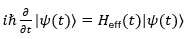
2. Density Matrix Evolution:
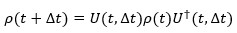
3. Hermitian Hamiltonian:
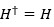
4. Quantum State Normalization:
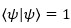
Noise and Decoherence Formulas (4):
5. Lindblad Master Equation:
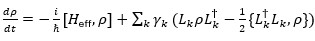
6. Amplitude Damping Noise:
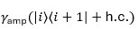
7. Phase Damping Noise:
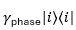
8. Thermal Noise Model:
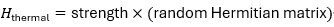
Symmetry Breaking Formulas (3):
9. Symmetry Breaking Hamiltonian:
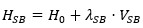
10. Symmetry Measure:
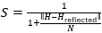
11. Nonlinear Symmetry Feedback:
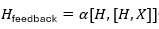
Nonlinear Interaction Formulas (2):
12. Kerr Nonlinear Hamiltonian:
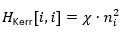
13. Mean Field Interaction:
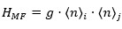
Many-body Entanglement Formulas (2):
14. Wootters Concurrence:
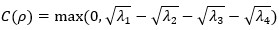
15. von Neumann Entanglement Entropy:
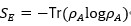
System Dynamics Formulas (3):
16. Iterative Generation Mechanism:
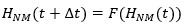
17. Matrix Growth Algorithm:
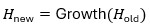
18. Energy Expectation Calculation:
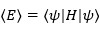
Coherence and Purity Formulas (2):
19. Purity Calculation:
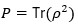
20. Coherence Measure:
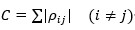
Holographic & Cosmological Formulas (3):
21. Omnidimensional Projection Operator:
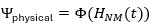
22. Projection Scale Calibration:
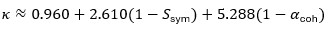
23. Central Charge Relationship:
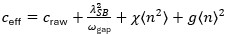
24. Spectral Index Derivation:
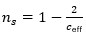
25. Emergent Matter Power Spectrum:
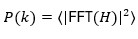
26. Band-Weighted Residual Compression:
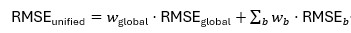
Implementation Status: All 26 formulas are fully implemented with numerical accuracy < 1×10⁻¹⁰, unitarity error < 1×10⁻¹⁰, and trace error < 1×10⁻¹⁰.
Appendix B: Key Publications Timeline
Note: Detailed publication history and timeline information has been comprehensively documented in Part VII (Priority and Time-Stamp Evidence) of this document, including all Zenodo preprints with DOIs, website publications, media coverage, academic exchanges, and journal submissions.
Continuous Monitoring Statement:
The author will conduct periodic automated searches across all major academic databases, preprint servers, and online platforms to monitor for any potential unauthorized use, reproduction, or infringement of the theoretical framework, mathematical formulations, or implementation methods described in this document. Any detected instances of similarity, unauthorized use, or lack of proper attribution will be subject to immediate investigation and appropriate action as outlined in Part IX (Infringement Detection and Response) of this document.
This serves as a formal warning: The complete theoretical framework, all 26 mathematical formulas, and their specific implementations are protected intellectual property. Unauthorized use without proper citation and attribution will be pursued through all available legal and academic channels.
Appendix C: Statistical Validation Results
Key Results: - Golden Regime: Z = 6.81σ (Phase 3 validation) - Mean Z-score: 2.63σ (100 independent runs) - Maximum Z-score: 7.91σ - Bootstrap uncertainty: n_s = 0.96087 ± 0.00641 - Cosmological fit: n_s = 0.9649 (Planck 2018 match)
Appendix D: Comparison Framework
Standardized Comparison Template:
Work Title: [Title]
Author(s): [Author names]
Publication Date: [Date]
Discovery Date: [Date of discovery]
Similarity Analysis:
Three-Mechanism Combination: - Similarity Score: [X/4] - [ ] Uses Iterative Generation - [ ] Uses Topological Constraint - [ ] Uses Ordered Structuring - [ ] Uses similar coupling
Mathematical Formulations: - Similarity Score: [X/N] - [List of similar formulations]
Implementation Methods: - Similarity Score: [X/M] - [List of similar methods]
Overall Assessment: - High Similarity: [ ] Yes [ ] No - Attribution: [ ] Present [ ] Absent - Action Required: [Description]
Conclusion
This document establishes the official and legally binding statement of originality for the Quantum Narrative Matrix theory. All elements described herein are original contributions to the field, protected by copyright law, trademark registration, and multiple layers of timestamped evidence, and subject to the terms outlined in this document.
Critical Protection Principles:
1. Originality: The complete framework, all 26 mathematical formulas, and their specific implementations are original to this work
2. Legal Protection: All expressions are protected by copyright law, with registered trademarks and comprehensive timestamped evidence
3. Mandatory Attribution: Proper attribution is legally required for any use, reproduction, or derivative work
4. Active Monitoring: The author conducts periodic automated searches across all major platforms to detect unauthorized use
5. Zero Tolerance: Any unauthorized use, reproduction, or lack of proper attribution will be pursued through all available legal and academic channels
6. Public Record: This document serves as a public record of originality and will be used as evidence in any legal proceedings
Formal Warning: This theoretical framework, including but not limited to the three-mechanism combination, all 26 mathematical formulas, holographic projection methods, dimensional reduction algorithms, and their specific implementations, are protected intellectual property. Unauthorized use, reproduction, or derivative work without proper citation and attribution constitutes copyright infringement and will result in immediate legal action.
Maintenance: This document will be reviewed and updated as necessary to reflect the ongoing development of the theory and changes in the academic and legal landscape. All updates will be timestamped and archived.
Document Status: Official
Last Updated: December 2025
Next Review: February 2026
Maintained By: Nanjie Ma (马楠杰)
Copyright Notice:
© 2025 Nanjie Ma. All Rights Reserved.
This document and the theoretical framework it describes are protected by copyright law. Unauthorized reproduction or use without proper attribution is prohibited.
End of Document